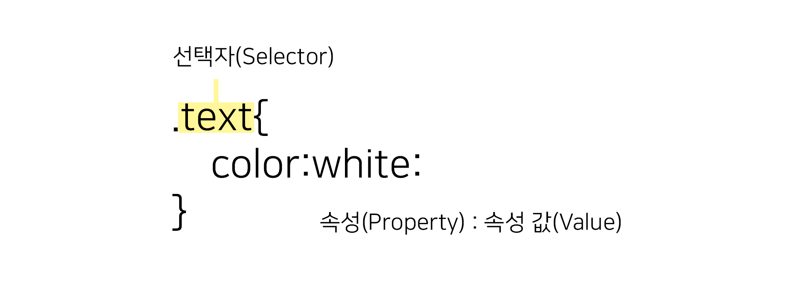

CSS
CSS(Cascading Style Sheets)는 HTML로 작성된 문서를 쓰기 위한 스타일 시트 언어입니다.
HTML은 문서의 골격을 이룬다면, CSS는 그 골격에 맞는 디자인 작업 언어라고 생각하면 됩니다
CSS 선택자
CSS 선택자를 통해 요소를 선택하고 속성을 줄 수 있습니다.
id 선택자와 class 선택자
- id 선택자
- 하나의 태그만 식별하기 위한 선택자입니다.
- 하나의 태그에서 하나만 사용할 수 있습니다.
"#"으로 표시합니다.
- class 선택자
- 여러개의 태그를 식별하기 위한 선택자입니다.
- 하나의 태그에서 여러 개를 사용할 수 있습니다.
"."으로 표시합니다.
기본 선택자
| 종류 | 예시 | 이름 |
|---|---|---|
| 태그 선택자 | p {color:#fff;} | p 태그를 선택하여 글씨 색을 하얀색으로 변경합니다. |
| 클래스 선택자 | .class {color:#fff;} | class 클래스를 선택하여 글씨 색을 하얀색으로 변경합니다. |
| 아이디 선택자 | #id {color:#fff;} | id 아이드를 선택하여 글씨 색을 하얀색으로 변경합니다. |
| 그룹 선택자 | p, div {color:#fff;} | p 태그와 div 태그를 선택하여 글씨 색을 하얀색으로 변경합니다. |
| 전체 선택자 | * {color:#fff;} | 전체 태그를 선택하여 글씨 색을 하얀색으로 변경합니다. |
계층 선택자
| 종류 | 예시 | 이름 |
|---|---|---|
| 하위 선택자(Descendant Selector) | div p {color:#fff;} | div 태그의 모든 자식 중 p 태그를 모두 선택하여 글씨 색을 하얀색으로 변경합니다. |
| 자식 선택자(Child Selector) | div > p {color:#fff;} | div 태그의 모든 자식 중 첫번째 자식 p 태그를 선택하여 글씨 색을 하얀색으로 변경합니다. |
| 형제 선택자(sibling Selector) | div ~ p {color:#fff;} | div 태그의 인접한 형제 p 태그를 모두 선택하여 글씨 색을 하얀색으로 변경합니다. |
| 인접 형제 선택자(Adjacent Sibling Selector) | div + p {color:#fff;} | div 태그의 인접한 형제 첫번째 p 태그를 선택하여 글씨 색을 하얀색으로 변경합니다. |
속성 선택자
| 종류 | 예시 | 이름 |
|---|---|---|
| [name] | a[href] | a 태그 속성 중에 href가 있으면 선택합니다. |
| [name="value"] | a[href="#header"] | a 태그 href 속성의 값이 '#header'이면 선택합니다. |
| [name~="value"] | a[href~="web"] | a 태그 href 속성의 값이 'web'을 포함한 요소를 선택합니다. |
| [name|="value"] | a[href|="web"] | a 태그 href 속성의 값이 'web'이거나 'web'으로 시작하는 요소를 선택합니다. |
| [name^="value"] | a[href^="web"] | a 태그 href 속성의 값이 'web'으로 시작하는 태그를 선택합니다. |
| [name*="value"] | a[href*="web"] | a 태그 href 속성의 값이 'web'이 포함되어 있는 태그를 선택합니다. |
| [name$="value"] | a[href$="com"] | a 태그 href 속성의 값이 'com'으로 끝나는 태그를 선택합니다. |
가상 요소
| 종류 | 예시 | 이름 |
|---|---|---|
| ::first-line | p:first-line {color:#fff;} | 문단의 첫 줄에 컬러색을 하얀색으로 변경합니다. |
| ::first-letter | p:first-letter {color:#fff;} | 문단의 첫 글자에 컬러색을 하얀색으로 변경합니다. |
| ::before | p:before {content:"시작"} | 문단 시작 부분에 '시작'이라는 요소를 추가합니다. |
| ::after | p:after {content:"끝"} | 문단 끝 부분에 '끝'이라는 요소를 추가합니다. |
| ::selection | p:selection {color:#fff;} | 드래그로 선택하였을 경우 글씨 색을 하얀색으로 변경합니다. |
가상 클래스
| 종류 | 예시 | 이름 | |
|---|---|---|---|
| :first-child | li:first-line {color:#fff;} | li 자식 요소 중 첫 번째 자식 요소에게 컬러를 하얀색으로 변경합니다. | |
| :last-child | li:last-line {color:#fff;} | li 자식 요소 중 마지막 번째 자식 요소에게 컬러를 하얀색으로 변경합니다. | |
| :first-of-type | p:first-of-type {color:#fff;} | 자식 요소 중 p 태그 첫 번째 자식 요소에게 컬러를 하얀색으로 변경합니다. | |
| :last-of-type | p:last-of-type {color:#fff;} | 자식 요소 중 p 태그 마지막 번째 자식 요소에게 컬러를 하얀색으로 변경합니다. | |
| :nth-child() | li:nth-child(2) {color:#fff;} | li 자식 요소 중 2번째 자식 요소에게 컬러를 하얀색으로 변경합니다. | |
| :nth-last-child() | li:nth-last-child(2) {color:#fff;} | li 자식 요소 중 뒤에서 2번째 자식 요소에게 컬러를 하얀색으로 변경합니다. | |
| :nth-of-type() | p:nth-of-type(2) {color:#fff;} | 자식 요소 중 p 태그 2번째 자식 요소에게 컬러를 하얀색으로 변경합니다. | |
| :nth-last-of-type() | p:nth-last-of-type(2) {color:#fff;} | 자식 요소 중 p 태그 뒤에서 2번째 자식 요소에게 컬러를 하얀색으로 변경합니다. | |
| :only-child | :only-child {color:#fff;} | 자식 요소 중 유일한 태그 자식 요소에게 컬러를 하얀색으로 변경합니다. | CSS3 |
| :only-of-type | p:only-of-type {color:#fff;} | 자식 요소 중 유일한 p 태그 자식 요소에게 컬러를 하얀색으로 변경합니다. | CSS3 |
| :not() | li:not(:nth-child(2)) {color:#fff;} | li 자식 요소 중 2번째 자식 요소를 제외하고 컬러를 하얀색으로 변경합니다. | |
| :root | :root {color:#fff;} | 기본 루트 요소의 컬러를 하얀색으로 변경합니다. | |
| :empty | :empty {color:#fff;} | 컨텐츠 요소가 없는 요소의 컬러를 하얀색으로 변경합니다. |
링크 가상 클래스
| 종류 | 예시 | 이름 |
|---|---|---|
| :link | a:link {color:#fff;} | 방문하지 않는 링크의 글씨 색을 하얀색으로 설정합니다. |
| :visited | a:visited {color:#fff;} | 방문한 링크의 글씨 색을 하얀색으로 설정합니다. |
| :hover | a:hover {color:#fff;} | 링크 위에 마우스를 올려 놓았을 경우 글씨 색을 하얀색으로 설정합니다. |
| :active | a:active {color:#fff;} | 링크가 활성화되었을 경우 글씨 색을 하얀색으로 변경합니다. |
폼 관련 선택자
| 종류 | 예시 | 이름 |
|---|---|---|
| :checked | input:checked {color:#fff;} | input 태그가 체크되었을 때 글씨 색을 하얀색으로 변경합니다. |
| :focus | input:link {color:#fff;} | input 태그에 초점이 맞추어졌을 때 글씨 색을 하얀색으로 변경합니다. |
| :enabled | input:enabled {color:#fff;} | input 태그가 사용 가능하면 글씨 색을 하얀색으로 변경합니다. |
| :disabled | input:disabled {color:#fff;} | input 태그가 사용 가능하지 않으면 글씨 색을 하얀색으로 변경합니다. |
CSS 색상
RGB 모드
RGB Color 모드는 빛의 삼원색은 빨강/ 초록/ 파랑을 섞어 색을 만듭니다. 색을 섞을 수록 밝아지므로 '가산 혼합'이라 부릅니다. 모니터 화면용 작업(프레젠테이션, 웹디자인 등)에서 기본적으로 사용하는 색상 모드입니다.
CMYK 모드
CMYK 시안(Cyan) / 마젠타(Magenta) / 노랑(Yelloew) / 검정(Black) 의 원색을 섞어서 색상을 만듭니다. 물감처럼 색을 섞을 수록 점점 어두워지므로 '감산 혼합'이라 부릅니다. 출력용 이미지를 작업할 때는 CMYK 색상 모드에서 작업해야 합니다.
16진수 표기법
웬 문서에서 색상을 표현하는 방법은 16진수로 표현하는 방법입니다. 두 자리씩 묶어서 #RRGGBB 형식으로 표현하며, RR은 빨간색, GG 초록색, BB는 파란색의 양을 표현합니다. 각 색사잉 하나도 섞이지 않았음은 00부터 가득섞였으면 FF까지 사용 할 수 있습니다.
색상이름 표기법
색상 이름을 이용하여 색을 표현할 수 있습니다. 가장 기본적인 16가지를 포함하여 216가지의 색상 이름 표기법이 있습니다.
RGB와 RGBA 표기법
웹 문서에서 색상을 표현하는 RGB(255,255,255)는 십진수를 이용하여 표현합니다.색이 하나도 섞이지 않았을 때에는 0으로 표시하고, 가득 섞였을 때에는 255로 표현합니다. 숫자는 색상의 양을 나타내고 a는 투명도(Alpha)를 나타냅니다. 투명도는 0과 1사이로 표현합니다.
HSL와 HSLA
웹 문서에서 색상을 표현하는 HSL은 색상(HUE), 채도(sturation), 밝기(lightness)를 나타냅니다. 색상은 둥글게 배치한 색상환으로 표시하고 0도와 360도에는 빨간색, 120도에는 초록색, 240도에는 파란색이 배치됩니다. 채도가 0%이면 회색톤, 100% 순색으로 표시됩니다. 밝기는 0% 가장 어둡고, 100%가장 밝습니다
CSS 선언
HTML 문서에 스타일을 선언하는 방법은 3가지가 있습니다
- 내부 스타일(Internal Style Sheet) : head 태그 안에 선언하는 방법
- 외부 스타일(External Style Sheet) : 외부 파일로 연결하는 방법
- 인라인 스타일(Inline Style Sheet) : 태그에 직접 연결하는 방법
<!DOCTYPE html>
<html lang="en">
<head>
<meta charset="UTF-8">
<title>Document</title>
<!-- 내부 스타일 -->
<style>
h1 {color: #fff;}
</style>
<!-- 외부 스타일 -->
<link rel="stylesheet" href="경로">
</head>
<body>
<!-- 인라인 스타일 -->
<h1 style="color: #fff"></h1>
</body>
</html>
float 으로 인한 깨짐 현상
float을 쓰게 되면 영역의 높이 값이 0으로 줄어들기 대문에 영역을 유지하는 방법이 필요합니다.
- 깨지는 영역에 똑같이이
folat:left를 사용합니다 ※단점 : 모든 영억에 float을 사용하게 되고, 레이아웃 복잡하면 정확히 어디가 깨지는지 알 수가 없습니다 - float의 성질을 차단하는
clear:both를 사용합니다 ※레이아웃이 복잡해지면 어디가 깨지는지 알 수가 없습니다 float을 사용한 부모 박스 영역을overflow(넘치다) :gidden (감추다)을 사용합니다,
상대주소 절대주소
상대주소
상대경로는 이미지를 삽입할 HTML 문서를 기준으로 경로를 인식하는 방법입니다.
이미지 파일이 HTML 문서와 같은 폴더에 있는지, 상위 폴더에 있는지, 하위 폴더에 있는지를 따져보고 경로를 지정해줘야 합니다
절대주소
이미지의 절대적인 경로로 지정하는 방식입니다.
절대주소는 고유한 경로이며, http://가 포함되어 있는 절대주소명만 웹브라우저 주소줄에 입력해도 그 이미지가 그대로 나옵니다.

이미지 표현 방법
웹 문서에 이미지를 표현하는 방법은 img 태그와 backgroung를 통해 설정할 수 있습니다
- img 태그를 표현하는 방법 : 이미지에 의미가 있는 경우 (로고, 배너)
- background로 표현하는 방법 : 이미지에 의미가 없는 경우 (배경 장식)
img 태그로 이미지 표현하기 (대체문자 표현 O (alt태그O))


background 속성으로 이미지 표현하기 (대체문자 표현 X (alt태그X))
이미지 스프라이트를 이용한 이미지 표현 (대체문자 표현 X (alt태그X))
이미지 스트라이프
아이콘 또는 장식을 위한 이미지 요소들은 스프라이트 기법을 활용하여 파일의 사이즈를 최소화 하고 효율성을 높일 수 있습니다.
- 여러번의 서버 요청을 한 번으로 줄일 수 있습니다
- 이미지 수정이나 관리가 간편합니다.
- 웹 접근성을 준수하기 위해서는 IR 효과를 설정해야 합니다.
IR 효과
IR(Iamage Replacement)기법은 이미지 대체 텍스트를 제공하기 위한 CSS 기법으로 다양한 기법을 사용하여 이미지 대체 텍스트를 제공할 수 있습니다.
Phark Method
의미 있는 이미지의 대체 텍스트를 제공하는 경우 : 이미지로 대체할 엘리먼트에 배경이미를 설정하고 글자는 text-indent 를 이용하여 화면 바깥으로 빼내어 보이지 않게 하는 방법
PWA IR
의미 있는 이미지의 대체 텍스트로 이미지를 off시에도 대체 텍스트를 보여주고자 할 때 : 이미지로 대체할 엘리먼트에 배경이미지를 설정하고 글자는 span태그로 감싼 후 z-index : -1 을 이용하여 화면에 안보이게 처리하는 방법
Screen Out
대체 텍스트가 아닌 접근성을 위한 숨김 텍스틀 제공할 때 사용합니다.
이미지 타입
프로젝트 종류에 따라 여려가지 이미지 타입을 사용할 수 있습니다.
| 종류 | PC Web | Mobile Web | Mobile App | 투명효과 | 용량 | 애니메이션 |
|---|---|---|---|---|---|---|
| GIF | O | O | X | △ | 저 | O |
| JPG | O | O | X | X | 중 | X |
| PNG-8 | X | O | △ | △ | 저 | X |
| PNG-24 | △ | O | O | O | 고 | X |
| SVG | O | O | O | O | 저 | O |
- Gif :GIF 는 이미지를 저장해도 데이터가 손실 되지 않는 무손실 압축을 사용합니다. Indexed color 속성을 가지고 있어서 최대 256가지의 컬러로만 저장 할 수 있습니다.
- JPG : JPEG 이미지는 인간의 눈으로 확인 할 수 없는 정보를 제거하는 방법으로 디테일한 사진 이미지를 가능한한 작게 만들어 놓ㄷ은 압축된 디자인 파일입니다. 색이 많이 들어가거나 화려한 이미지는 JPG로 표현합니다.
- PNG-8 :
- PNG-24 : PEG처럼 수천가지의 컬러를 가지면서 무손실 압축인 훌륭한 포맷입니다.
- SVG :
컨텐츠 요소를 보이지 않게 하는 방법
컨텐츠 요소를 보이지 않게 하는 방법은 display, opacity, visibility 등이있습니다
| 종류 | 반대 | 영역 | 애니메이션 |
|---|---|---|---|
dispaly : none |
dispaly : block | 영역 사라짐 | X |
visibility: hidden |
visibility: visible | 영역 유지 | X |
opacity:0; |
opacity:1; | 영역 유지 | O |
미디어 쿼리
미디어 쿼리는 화면(screen), 티비(tv), 프린터(print)와 같은 미디어 타입(media type)과 적어도 하나 이상의 표현식(expression)으로 구성된다.
- 표현식은 width, height, color와 같은 미디어 특성(media feature)들을 이용하여 그 특성들의 상태에 따라 다른 스타일 시트를 적용할 수 있다.
- 미디어 쿼리는 CSS3에 포함되어 있으며, 컨텐츠의 변경없이 주로 화면의 크기에 따라 스타일 시트를 달리하여 적절한 모양을 보여줄 수 있다.
- 미디어 쿼리는 두 가지 방법으로 사용할 수 있다.
- <link>요소에 사용하여 특성이 조건에 맞을때 css 파일을 불러온다.
- 스타일 시트내에서 @media 를 사용한다.
- media속성의 "screen and (max-width: 768px)"의 의미는 미디어 타입이 스크린이고, 화면의 최대 너비가 768px로 지정하는 것이다. 그러므로 화면의 너비 768px 이하 일때가 적용된다.
컨텐츠 요소를 가운데 오게 하는 방법
반응형을 작업할 때 어떤 요소를 가운데 오게 하는 방법은 상당히 중요하고 방법도 여러가지가 있습니다.
- 가장 기본적인 방법이지만 이 방법은 한 줄(요소)일 경우에서만 해당이 됩니다.
- 부모요소(인라인구조) : text-align : center; line-height: (height값과 동일하게)
- 요소(블록구조) : margin:0 auto; line-height: (height값과 동일하게)
- 요소의 성질을 table로 변환시켜서 가운데 정렬을 하는 방법이지만 table자체를 레이아웃에 많이 사용하지 않기 때문에 잘 쓰지 않는 방법입니다.
- 부모요소 : display:table;
- 자식요소 : display:table-cell, text-align:center; vertical-align:middle;
- 절대 요소를 이용한 가운데 정렬방법이며, 제일 흔하게 쓰이지만 단점은 영역이 없어지는 것이 단점이어서 반응형을 할 때 사용하기 불편한 점이 있습니다.
- 부모요소 : position:relative;
- 자식요소 : position:absolute; top:50%; left: 50%; margin-top:-(자식 요소 높이값의 반); margin-left:-(자식 요소 가로값의 반);
- 만약 자식요소의 가로값과 세로 값을 모르고 유동적인 경우에 절대 요소를 사용하여 가운데로 오는 정렬방법입니다.
- 부모요소 : position:relative;
- 자식요소 : position:absolute; top:50%; left: 50%; transform:translate(-50%, -50%);
- 절대 요소를 이용한 가운데 정렬 방법이지만 흔하게 쓰이지는 않습니다.
- 부모요소 : position:relative;
- 자식요소 : position:absolute; top:0; left:0; top:0; right:0; margin: auto;
- CSS3를 이용한 방법이지만 최신 브라우저 이외에서는 작동하지 않는 단점이 있지만 표준화 된다면 앞으로 많이 쓰일 방법입니다.
- 부모요소 : height 값 설정
- 자식요소 : display: flex; justify-content: center; align-items: center;
margin
margin 속성은 요소의 바같쪽 여백을 설정합니다.
margin-top: 10px;요소의 위쪽 바깥 여백을 설정margin-right: 11px;요소의 오른쪽 바깥 여백을 설정margin-bottom: 12px;요소의 아래쪽 바깥 여백을 설정margin-left: 13px;요소의 왼쪽 바깥 여백을 설정margin: 10px 11px 12px 13px;요소의 위쪽/오른쪽/아래쪽/왼쪽 바깥 여백을 설정margin: 10px 11px 12px;요소의 위쪽(10px)/왼쪽,오른쪽(11px)/아래쪽(12px)margin: 10px 11px;요소의 위쪽,아래쪽(10px)/왼쪽,오른쪽(11px)margin: 10px;요소의 위쪽/오른쪽/아래쪽/왼쪽(10px)margin: auto;자동값 또는 기본값 또는 초기값margin: 0 auto;블록 구조를 가운데 정렬할 때 사용
padding
padding 속성은 안쪽 여백을 설정합니다.
padding-top: 10px;요소의 위쪽 바깥 여백을 설정padding-right: 11px;요소의 오른쪽 바깥 여백을 설정padding-bottom: 12px;요소의 아래쪽 바깥 여백을 설정padding-left: 13px;요소의 왼쪽 바깥 여백을 설정padding: 10px 11px 12px 13px;요소의 위쪽/오른쪽/아래쪽/왼쪽 바깥 여백을 설정padding: 10px 11px 12px;요소의 위쪽(10px)/왼쪽,오른쪽(11px)/아래쪽(12px)padding: 10px 11px;요소의 위쪽,아래쪽(10px)/왼쪽,오른쪽(11px)padding: 10px;요소의 위쪽/오른쪽/아래쪽/왼쪽(10px)padding: auto;자동값 또는 기본값 또는 초기값padding: 0 auto;블록 구조를 가운데 정렬할 때 사용
width
width 속성은 요소의 가로 값을 설정합니다.
witdth: 10pxwitdth: auto자동값 또는 초기값
height
height 속성은 요소의 세로 값을 설정합니다.
height: 10pxheight: auto자동값 또는 초기값
text-align
text-align 속성은 텍스트의 정렬 방식을 설정합니다
text-align: left왼쪽 정렬text-align: right오른쪽 정렬text-align: center가운데 정렬text-align: justify양쪽 정렬
font
font 속성은 폰트의 다양한 속성을 설정합니다.
- font
- font-family
- font-size
- font-size-adjust (가로로 바뀌면 사이즈 설정해주는 것)
- font-stretch
- font-style
- font-variant
- @font-face
line-height
라인 박스의 높이를 설정합니다. 일반적으로 텍스트 줄 사이의 거리를 설정하는 데 사용됩니다.
line-height: 150pxline-height: 2.5;line-height: 3em;line-height: 150%;line-height: 32px;
text-transform
지정 방법 요소의 텍스트를 대문자로합니다. 텍스트를 모두 대문자 또는 소문자로 표시하거나 각 단어를 대문자로 표시하는 데 사용할 수 있습니다.
text-transform: capitalize;: 첫 글자 대문자text-transform: uppercase;: 대문자text-transform: lowercase;: 소문자text-transform: none;: 아무것도text-transform: full-width;: 텍스트 전체 제우기
float
한 요소(element)가 보통 흐름(normal flow)으로부터 빠져 텍스트 및 인라인(inline) 요소가 그 주위를 감싸는 자기 컨테이너의 좌우측을 따라 배치되어야 함을 지정.
- float 은 .또한 float 은 옛날에 쓰던 코드이며, 옆에 있는 박스들이 버그가 생김 좋은 방법은 아님. 그럴 때 쓰는 태그가 clear 태그
ex) float: left / float: right
※ clear: both; 양쪽플롯의 성질을 차단한다clear: both; - 가상요소
clearfix만들어서 영역 깨짐 현상을 막아줍니다. float: none;float: left;float: right;
background
background 속성은 백그라운드 이미지 속성 값을 설정합니다.
- background
- background-attachment : 백그라운드 이미지 고정여부를 설정합니다.
background-attachment: scrollbackground-attachment: fixedbackground-attachment: local- background-blend-mode : 백그라운드 배경을 혼합했을 때의 상태를 설정합니다.
background-blend-mode : nomal;background-blend-mode : multiplybackground-blend-mode : screenbackground-blend-mode : overlaybackground-blend-mode : darkenbackground-blend-mode : lightens
background-blend-mode : color-dodgebackground-blend-mode : saturationbackground-blend-mode : clolorbackground-blend-mode : luminosity- background-clip : 백그라운드 이미지 영역 속성을 설정합니다
background-clip : border-boxbackground-clip : padding-boxbackground-clip : content-box- background-color : 백그라운드 컬러를 설정합니다.
background-color : color 값background-color : transparent투명도- background-image : 백그라운드 이미지를 설정합니다.
background-image : url()background-image : none- background-orgin : 백그라운드 방향 설정합니다.
background-orgin : border-boxbackground-orgin : padding-boxbackground-orgin : content-box- background-postion : 백그라운드 위치를 설정합니다.
background-postion : left / right / bottom / topbackground-postion : percentage (퍼센트)background-postion : length (단위)- background-repeat : 백그라운드 반복 여부를 설정합니다.
background-repeat : repeat;기본값(X축, Y축 반복)background-repeat : repeat-x;이미지가 X축으로 반복background-repeat : repeat-y;이미지가 Y축으로 반복background-repeat :no-repeat-;이미지를 하나만 나오게 설정- background-size : 백그라운드 사이즈를 설정합니다.
background-size : auto;background-size : contain;background-size : cover;background-size : percentage;background-size : length;
border
border 속성은 테두리를 설정합니다
- border
- border-color
- border-right-color
- border-top-color
- border-left-color
- border-bottom-color
- border-width
- border-right-width
- border-top-width
- border-left-width
- border-bottom-width
- border-style
- border-right-style
- border-top-style
- border-left-style
- border-bottom-style
- border-image
- order-image-outset
- order-image-repeat
- order-image-slice
- order-image-source
- order-image-width
- border-radius(굴곡)
- border-top-left-radius
- border-top-right-radius
- border-bottom-left-radius
- border-bottom-left-radius
position
position 속성은 문서 상에 요소를 배치하는 방법을 지정합니다.
position: static;=기본 값position: fixed;=스크롤과 상관없이 항상 문서 최 좌측상단을 기준으로 좌표를 고정position: relative;=기준 점 잡아준다position: absolute=위치를 내 맘대로 하겠다position: inherit=부모 태그를 상속 받음
"ex) position: absolute; left: 100px; top: 100px
display : 진열/전시
display 속성은 요소를 어떻게 보여줄지를 결정.
display속성은 inline요소를 block 요소로 보이게 만들 수 있고, 또는 block요소를 inline 요소처럼 보이게 만들 수도 있음.display : none= 보이지 않음 박스가 생성되지 않으므로 따라서 공간을 차지하지도 않음display : block= 블록 박스display : inline= 인라인 박스display : inline-block:인라인 구조를 가지면서 블록구조를 가져라 라는 의미display : -webkit-box;: 기존의 float 또는 position 을 이용하여 레이아웃을 구현할 수 있었으나,display:box; 를 이용하여 손쉽게 flexible box model을 사용할 수 있다.-webkit-line-clamp: 블록 컨테이너의 콘텐츠를 지정한 줄 수만큼으로 제한합니다.box-direction: box의 흐름순서를 지정하는 속성 normal : 순방향의 순서, reverse: 역방향의 순서로 지정box-orient: 수평 또는 수직으로 그 내용을 레이아웃 여부 속성 세트box-ordinal-group: box의 흐름순서를 임의로 지정하는 속성box-flex: box-orient 를 통해 vertical 또는 horizontal로 flexible box 의 흐름을 정의 한 후 요소내에서 남은 공간을 box-flex 속성을 이용하여 남은 영역까지 확장시킬것인지 여부 결정: 박스 영역을 확장 하지 않음
text-indent
속성은 블록의 텍스트 줄 앞에 놓이는 빈 공간의 길이를 설정
text-indent: 0;text-indent: 30%;text-indent: -3em;
z-index
속성은 위치 지정 요소와, 그 자손 또는 하위 플렉스 아이템의 Z축 순서를 지정합니다. 더 큰 z-index 값을 가진 요소가 작은 값의 요소 위를 덮습니다.
z-index: auto;z-index: 1;z-index: 3;z-index: 5;z-index: 7;
vertical-align
속성은 inline 또는 table-cell box에서의 수직 정렬을 지정합니다.
vertical-align: baseline;vertical-align: sub;vertical-align: super;vertical-align: text-top;vertical-align: text-bottom;
overflow :넘쳐 흐르다
요소의 콘텐츠가 너무 커서 요소의 블록 서식 맥락에 맞출 수 없을 때의 처리법을 지정합니다.
overflow: visible;visible(보이는)overflow: hidden;hidden (숨기다)overflow: scroll;overflow: auto;
overflow-x
내용이 블록 레벨 요소의 왼쪽과 오른쪽 가장자리를 오버 플로우 어떤 쇼 속성 집합.
overflow-x: visible;overflow-x: hidden;overflow-x: scroll;overflow-x: auto;
overflow-y
내용이 블록 레벨 요소의 위쪽과 아래쪽 가장자리를 오버 플로우 어떤 쇼 속성 집합.
overflow-y: visible;overflow-y: hidden;overflow-y: scroll;overflow-y: auto;
text-overflow
세트가 숨겨진 오버 플로우의 콘텐츠는 사용자에게 신호 방법. 잘리거나 줄임표 ( ' ')를 표시하거나 사용자 지정 문자열을 표시 할 수 있습니다
text-overflow: ellipsis;ellipsis : 줄이다 ex) 가가겨겨고고...)text-overflow: clip;text-overflow: "-";text-overflow: "";
white-space
요소가 공백 문자를 처리하는 법을 지정합니다.
white-space: nowrap= 한줄효과white-space: normal;white-space: pre;white-space: pre-wrap;white-space: break-spaces;
visibility
속성을 사용하면 그래픽 요소의 가시성을 제어 할 수 있습니다. 값이
hidden있거나collapse현재 그래픽 요소가 보이지 않습니다.box-sizing
요소의 너비와 높이를 계산하는 방법을 지정합니다.
width 값을 padding이랑 같이 쓸 수 있게합니다
픽셀이랑 퍼센트를 같이 쓸 수 있다.box-sizing 속성을 사용해 이 방식을 바꿀 수 있습니다.
content-box기본 CSS 박스 크기 결정법을 사용합니다. 요소의 너비를 100 픽셀로 설정하면 콘텐츠 영역이 100 픽셀 너비를 가지고, 테두리와 안쪽 여백은 이에 더해집니다.border-box테두리와 안쪽 여백의 크기도 요소의 크기로 고려합니다. 너비를 100 픽셀로 설정하고 테두리와 안쪽 여백을 추가하면, 콘텐츠 영역이 줄어들어 총 너비 100 픽셀을 유지합니다. 대부분의 경우 이 편이 크기를 조절할 때 쉽습니다.
cursor
cursor 속성을 이용하면 해당 태그 위에 위치하는 마우스 커서의 모양을 바꿀 수 있다.
Auto Crosshair Default Pointer Move e-resize ne-resize nw-resize n-resize se-resize sw-resize s-resize w-resize Text Wait Help